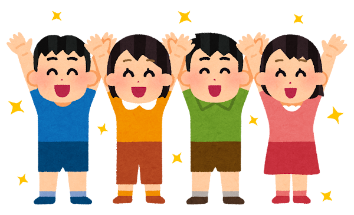

snug presents

设置
每题时长
s
音效
漢字探偵
中日汉字找不同
▦
方格找茬
在格子中找出日文汉字
📄
句子找茬
在日文句子中找出中文汉字
← 戻る
0
得分
0
连击
0%
正确率
Lv1
难度
← 戻る
0
得分
0
连击
0%
正确率
Lv1
难度
結果発表
0
最終得分
0%
正确率
0
最高连击
Lv1
最终难度
再挑戦
ホーム
不正解
中国語
→
日本語
次の問題へ
レベルアップ！